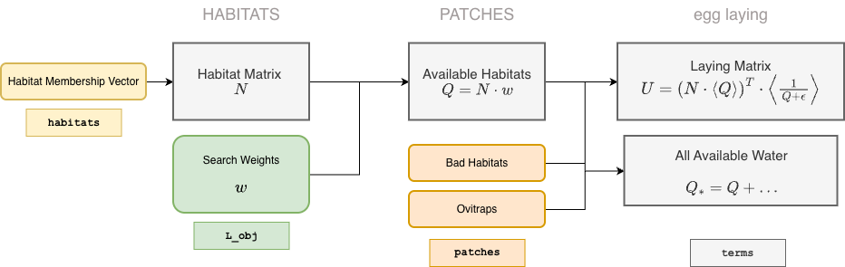

Habitats & Mosquito Ecology
The Habitat Interface for Egg Laying and Emergence
Source:vignettes/EggLaying.Rmd
EggLaying.Rmd
The Habitat Matrix
During setup, the location of each habitat is in the patch
membership vector (see Figure). From this, the habitat
matrix \(N\) is created.
membership <- c(1,1,1,2,2)
ramp.xds::make_habitat_matrix(3, membership) -> N
N## [,1] [,2] [,3] [,4] [,5]
## [1,] 1 1 1 0 0
## [2,] 0 0 0 1 1
## [3,] 0 0 0 0 0Any quantity that must sum quantites in habitats to patches can use \(N.\) In particular, it is used for emergence. If \(\alpha\) describes emergence of adults from aquatic habitats, then the number emerging per patch is \[\Lambda = N \cdot \alpha\]
Searching
Egg Laying in aquatic habitats is assumed to the outcome of searching, and searching for aquatic habitats is something adult mosquitoes do in the patches. To model searching we introduce the habitat search weight \(w,\) and then we compute habitat availability:
-
\(w\) — finding a habitat while searching within a patch is modeled with search weights \(w.\)
By default, the search weights are all set to 1.
Search weights can be changed using
setup_habitat_search_weights.
\(Q\) — Availability of habitats, per patch, is a simple sum: \[Q = N\cdot w\]
## [,1]
## [1,] 10.0
## [2,] 2.5
## [3,] 0.0-
Bad Habitats —The term habitats is synonymous with productive habitats, or any habitat that could potentially foster development of mosquitoes from egg, through all larval instars and into the pupal stage. A variable is set up to model the availability of bad habitats, or any habitat that attracts egg laying adults but that would never produce any adults.
By default, available bad habitat is set to 0.
Search weights can be changed using
setup_bad_habitats.
-
Ovitraps — A variable
ovitrapsis also available to simulate traps that attract egg-laying mosquitoes.By default, no ovitraps are available.
Search weights can be changed using
setup_ovitraps.
The total availability of all water is the availability of habitats plus bad habitats or ovitraps: \[Q_* = Q + \ldots\]
\(\nu\) — the egg laying rate, the number of oviposition events, per adult mosquito, is a function of all available habitats and the availability of other things that compete with aquatic habitats for adult mosquito attention while egg laying: \[\nu = F_\nu(Q_*)\]
\(\sigma\) — the patch emigration rate can be computed using habitat availability (and the availability of other resources a mosquito needs): \[\sigma = F_\sigma(Q_*, ...)\]
We note that egg laying rates and patch emigration rates can be set up without using the concept of searching.
Egg Laying
Having set up an interface to describe adult mosquito egg laying behaviors, we must now use it to distribute the eggs laid by adults in each patch among all the habitats.
- the fraction of eggs laid in the \(j^{th}\) patch by adults that go into the \(i^{th}\) habitat in that patch is \(w_i/Q_j.\) These are found in the laying matrix. To avoid divide by zero errors, we add a very small \(\epsilon\) when normalizing. Finally, we use \(\left<w\right>\) to denote a diagonal matrix made from the vector \(w\), and: \[U = \left(N \cdot \left<w\right>\right)^T \cdot \left<\frac 1 {Q+ \epsilon} \right>\]
ramp.xds::make_U_matrix(weights, N, Q)## [,1] [,2] [,3]
## [1,] 0.1 0.0 0
## [2,] 0.2 0.0 0
## [3,] 0.7 0.0 0
## [4,] 0.0 0.2 0
## [5,] 0.0 0.8 0- the fraction of eggs laid in productive habitats is \(Q/Q_*.\)